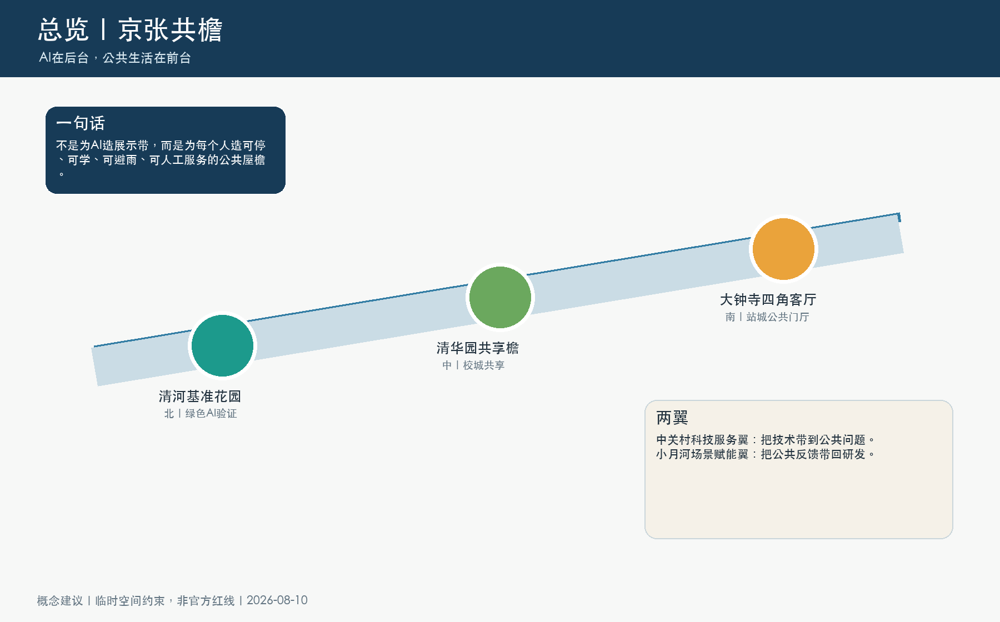
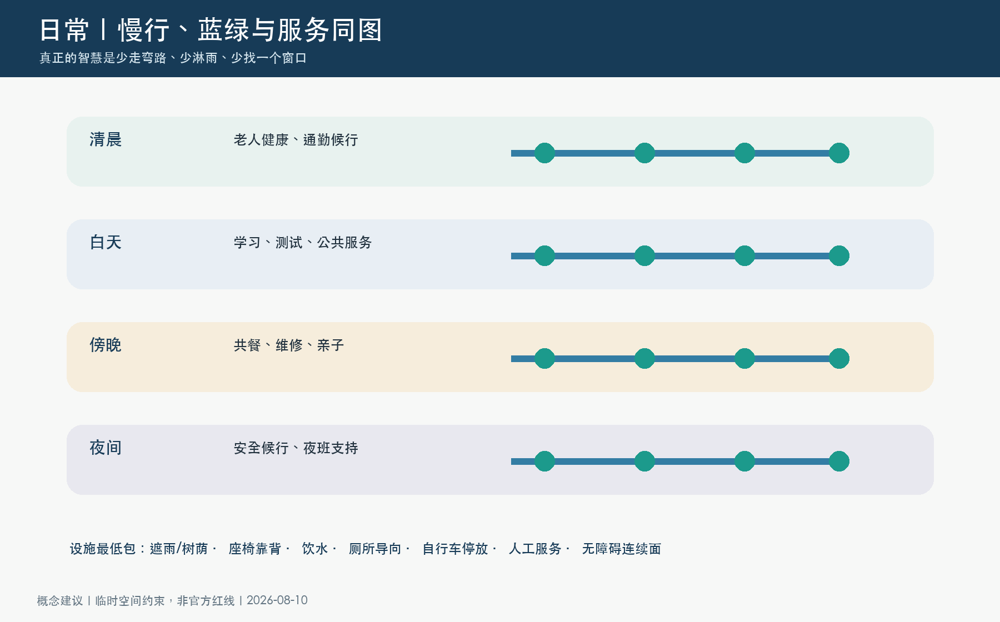
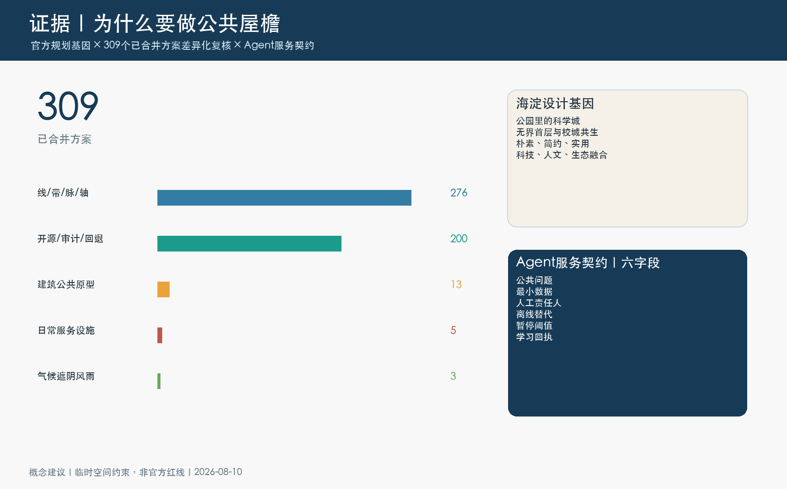
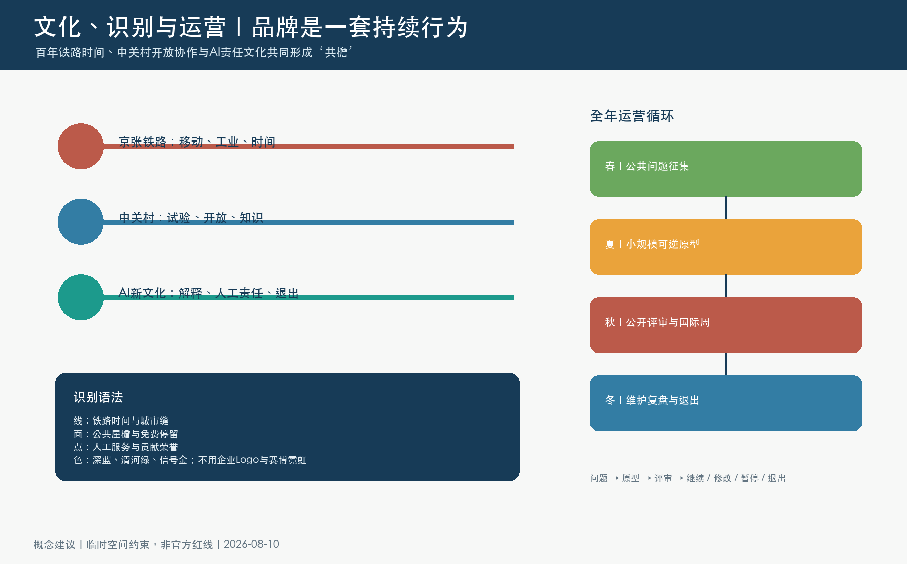

总览地图｜三层范围｜重点区域｜用地分区｜交通慢行｜蓝绿公共空间｜建筑与更新项目｜AI 场景｜核心指标｜任务覆盖｜自检状态｜来源｜假设
证据边界：专业空间复核已在声明依赖的隔离环境、固定设计 Git 头上通过；九个必需 GeoJSON 仍是 Agent 概念设计层。正式边界、树木、权属、交通、排水、公众授权、工程和预算一旦到位，相关指标、图件和结论必须重算或撤回。
一张图读懂整体规划与旗舰



五缝空间协议：把概念线变成可审查的地面任务
大钟寺站城共地缝
逐出口组织步行、轮椅、公交、自行车和物流；地下连通只作专业备选。
- 1:500 逐出口平面
- 1:200 站前—首层断面
- 轨道、交通、消防、无障碍专项
北三环—四道口安全等候缝
先做遮蔽、可读导向、非数字服务和可见首层，不把立交或下穿画成既定事实。
- 等待区—过街—沿街界面
- 分开人行、轮椅、自行车冲突
- 道路红线与交管复核
知春—京包遗产日常缝
在一期遗址公园运营底盘上补雨雪候行、生活导向和连续地面，不复制活动景观。
- 遗产—入口—街道平面
- 展示带、净行带、维护带分层
- 文保、树木、照明、排水复核
清华园—五道口共享学习缝
共享檐连接校园、社区与产业首层，优先验证免费学习、照护、维修和人工服务。
- 校城界面 1:500
- 共享檐—首层—慢行 1:200
- 产权、消防、夜间运营协商
清河北五环河园转换缝
保留植被信号簇，以基准花园、雨洪观察和维护通道形成低扰动转换。
- 河园—慢行带平面
- 雨水—植被—停留断面
- 树木、生境、水文专项
四角客厅的地面优先
四角分别承担到达、照护、交换和夜间服务；中心软 X 只表达受专项约束的导向关系。
- 300 m 审查框架
- 早高峰、日间、晚高峰、夜间四图
- 不把客流压力外推为全带基线
Agent 服务契约：能拒绝，也能把责任交还给人
最小数据输入
只读去标识化设施状态与人工报修摘要；不读取人脸、声纹、精确轨迹或敏感画像。
确定性规则
先查数据、权限、运营责任和路线人工复核四道门；不符合就拒绝，不生成“看似合理”的方案。
人工拥有最终决定
Agent 只能排问题、给候选动作和提醒复测；道路、轨道、用地、建设与公共服务决定权仍在法定主体。
系统离线也能用
纸面时段表、静态双语导向、人工问询和现场值守是每一项数字服务的非数字等价物。
可暂停、可撤回
参与者可以退出可识别记录；使用者拒绝数字服务时仍保留人工服务和公共通行。
失败先于扩展
公开记录谁受益、谁被漏掉、哪里失败、是否继续；没有责任人或无障碍安全未解，不进真实试点。
个人识别 / 轨迹请求
拒绝身份识别、可识别轨迹和跨场景画像，退回数据边界门。
试图改变真实信号
拒绝 Agent 直接控制交通信号，改为具名人工责任和专项决策。
没有人工接管人
拒绝无责任人的自动服务；必须暂停、转人工或退出，并留下学习回执。
零阶段公众与证据撤回
谁被邀请
居民、通勤者、学生与科研人员、产权/经营相关方、维护人员、老幼照护者、行动/视听/认知障碍者和低数字能力使用者。
怎么记录
以单一路段、入口、过街、候行点为最小空间单元；按 15 分钟时段记录等待、绕行、净行带、照明、天气和人工帮助。
什么时候停
出现无障碍断点、人车冲突、雨天积水、夜间不可识别或隐私风险时，撤回“贯通/安全/改善”叙述并触发复测。
十二条市民旅程与反方设计室
向阳座位、厕所导向、人工帮助
连续干行、转身空间、无门槛服务
可看护游戏、饮水、安静等候
免费桌面、电源、非消费学习位
静态双语导向、人工解释、铁路故事
干式更换、隔离单跨、不封闭全檐
地面连续、少绕行、可停靠
清楚分流、短停区、不过街堆车
不消费可坐、可见厕所、远离车流
有人值守、照明不过曝、可求助
人工时段表、明确路缘、可暂停活动
干燥候行、排水观察、人工接管
共享檐与四角客厅各六项，均记录输入、发现、空间响应、人工决定和回放字段。
离线可回放湿地台阶、商业侵占、Agent 离线擅改信号均被拦截。
必须失败O 官方、P 公开观察、D 派生分析、C 概念假设分层保存，不把文献或遥感写成现场事实。
可追溯把十个工作包映射到“体检评估—多元协商—规划配政策—制定计划”四步八清单。
概念接口图件与证据索引




离线证据重放
重放只检查包内证据契约，不执行 Agent、不给出规划审批，也不替代人工、专业或政府决定。
尚未运行